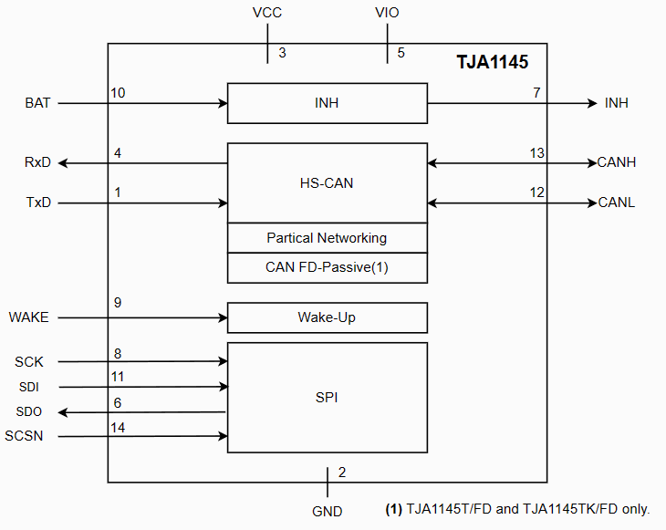
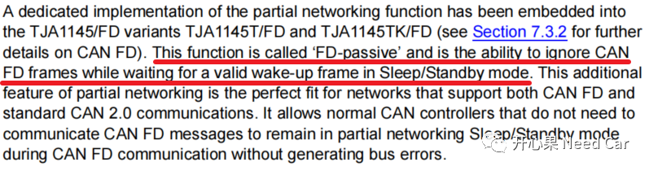
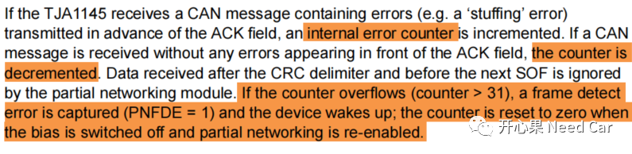
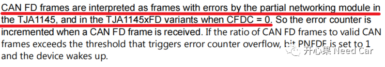
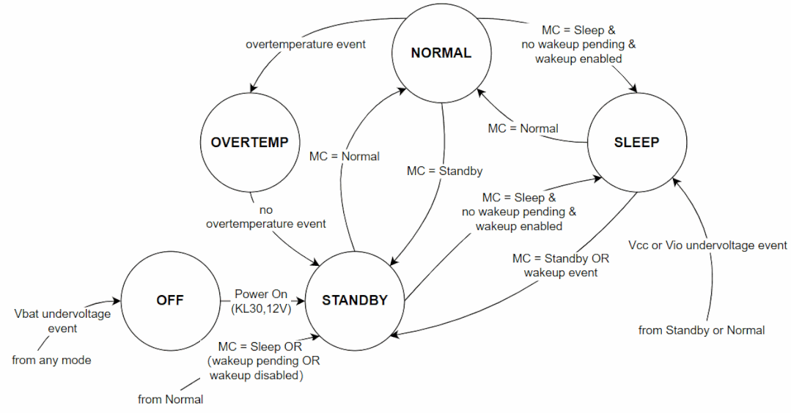
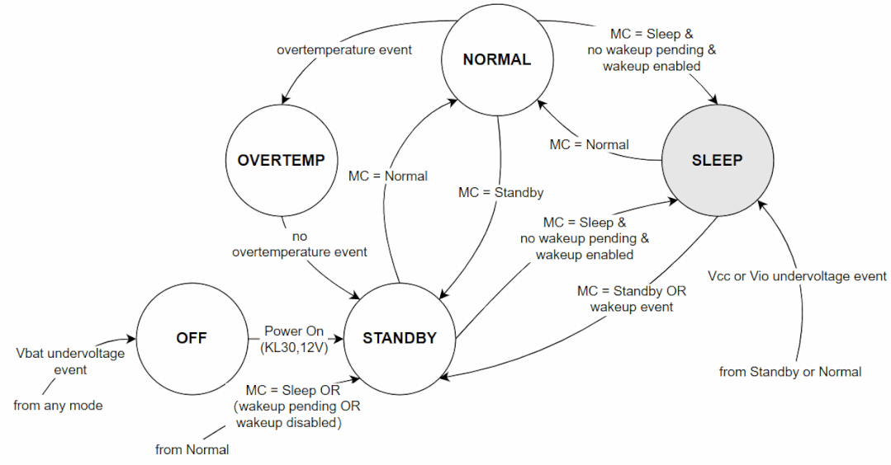
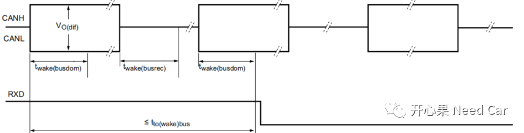

关于这个问题的讨论，之前写过，可以参考前文Autosar网络管理：CAN FD帧能否唤醒网络？但是只写了一半，为了不留遗憾，本文把另一半补齐。展开细聊之前，先感谢一下群内小伙伴的反馈，此问题源于他对项目Bug的思考，在此，分享给更多小伙伴。
提示：本文基于支持CAN FD的NXP TJA1145讨论
搞清楚这个问题之前，我们需要重新认识一下NXP TJA1145这款收发器。NXP TJA1145又细分不同的Variants，如下所示：
如上图，大家可以看出，有的版本带"FD"字样，有的不带"FD"字样。有什么区别呢？如下图，带"FD"字样的1145有CAN FD-Passive功能，即：TJA1145T/FD、TJA1145TK/FD两个Variant具有此功能。
（一）CAN FD-Passive
什么是CAN FD-Passive功能呢？看一下手册给的解释，如下所示：
解释：当Transceiver处于Sleep或者Standby模式时，如果收到了CAN FD报文，并且，此CAN FD报文不是有效的唤醒源时，可以忽略此CAN FD报文，而不是将其当作错误处理。这与Transceiver类型有什么关系呢？TJA1145手册是这样描述的，如下所示：
（1）如果TJA1145收到了一个错误帧（ACK应答槽之前的错误），内部错误计数器会累加，如果此错误计数器＞31，则PNFDE置位（=1），且Transceiver唤醒，即：Transceiver供电（这里可以理解为Transceiver进入了Standby模式），注意：此时网络并未唤醒。描述如下：

（2）如果使用的TJA1145不带"FD"，收到CAN FD帧，Transceiver会将其当作错误帧，也就是内部错误计数器会累加；如果使用的TJA1145带"FD"，没有使能PN（Partical Network）功能（CFDC=0），收到非有效的CAN FD帧，内部错误计数器会累加。描述如下所示：

结合（1）和（2）两点，我们需要注意，工程项目中使用的TJA1145的Variants。
这个问题，之前讲解的不够透彻，本文做一个完善。要分情况讨论，与使用的Transceiver有关，如果使用类似TJA1145的收发器，需要进一步细分。
（一）Transceiver唤醒方式
讨论Transceiver唤醒方式之前，我们先清楚System Controller（也就是我们常说的Transceiver）的模式切换。当uC（ECU）需要休眠时，需要对TJA1145做几件事：Transceiver休眠时，System Controller由NORMAL进入SLEEP模式时的状态切换，此模式切换在ECU Shutdown阶段处理（提示：需要手动实现），如下所示：

Transceiver唤醒时，System Controller状态切换如下所示（SLEEP->STANDBY->NORMAL）：
Transceiver的唤醒，项目中，一般通过唤醒事件唤醒（wakeup event，eg:网络管理报文），此时，Transceiver进入STANDBY模式。从STANDBY模式进入NORMAL模式，则必须通过SPI发送指令进入，也就是说，由uC主动发起。
不同类型的Transceiver，唤醒方式可能有所不同，具体需要看使用的型号。常见的唤醒方式有：
1、CAN standard wake-up (PN不使能或者没有PN功能)
使用类似TJA1043的Transceiver，硬件本身不支持PN功能；使用类似TJA1145的Transceiver，不使能PN功能时。可以通过标准的CAN唤醒时序方式唤醒Transceiver（供电），一般来说，任意报文都能满足此唤醒时序，即：任意报文（包括CAN FD报文，错误帧）均可唤醒Transceiver。唤醒时序如下所示：
提示：RxD的电平由高拉低。如果使用ICU（Input Capture Unit，输入捕获单元）设置RxD Pin，中断处理此唤醒事件（下降沿触发方式），可加快第一帧报文外发的时间。
2、使用WAKE Pin唤醒
多数Transceiver具有WAKE Pin脚，可以通过此方式识别唤醒事件，而工程上，很多时候不使用此Pin，即：不使用此方式。
3、使用CAN PN唤醒
此方式可以指定特定范围的报文唤醒Transceiver，比如：一段网络管理报文（0x500~0x53F）。此功能，可以通过Tranceiver的硬件实现（eg：TJA1145TK/FD）。如果Transceiver硬件没有PN功能，也可以通过软件实现过滤，不过，这需要uC先唤醒，相对Tranceiver硬件过滤，会更消耗能量。所以，CAN FD帧唤醒网络要分情况：- 如果Transceiver不支持PN功能，如果想实现CAN FD帧唤醒网络，可以通过软件过滤实现；
- 如果Transceiver支持PN功能，在不使能PN功能的前提下，CAN FD帧可以唤醒uC，之后可以通过软件过滤决定是否唤醒网络。如果使能硬件PN功能，必须是有效的报文，且是经典CAN报文唤醒网络。